Предметы на актах
Покупка у нпс / с пола
Паста для торговцев : 3-линк, 4-линк, 5-линк, 10-15% скорости бега
Во время прохождения актов, необходимо постоянно обновлять снаряжение.
Чтобы получить недостающие характеристики используем :
-
Широкий ремень
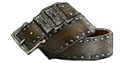20-30 к силе
-
Амулет с нефритом
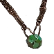20-30 к ловкости
-
Амулет с янтарем
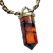20-30 к силе
-
Амулет с цитрином
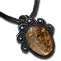20 к силе и ловкости
-
Амулет с ониксом
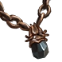16 ко всем статам
Чтобы получить недостающие сопротивления :
-
Кольцо с сапфиром
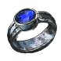20-30 холоду
-
Кольцо с Рубином
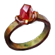20-30 огню
-
Кольцо с топазом
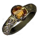20-30 молнии
-
Кольцо с 2мя камнями
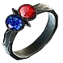12-16 всем стихиям
По возможности все предметы необходимо делать редкими. Сделать это можно с помощью :
-
Сфера алхимии
на белую шмотку
-
Любая эссенция
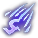на белую шмотку
-
Сфера царей
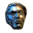на синюю шмотку
Со 2-го акта берем в обе руки оружие
Улучшаем его до рарки, в идеале выбить статы на приспешников
-
Жезл зова/призыва
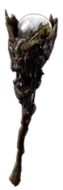Урон приспешников 20~70
Скорости атаки приспешников
Так же сопротивления или какие-либо хар-ки можно добавить на желтую-синюю шмотку на станке в убежище
Предметы
начальная версия
Кинжал
- Раскатистый удар
- Град ударов
- Губительное прикосновение
Шлем
- Путы времени
- Решимость
- Богохульство
- Спасение от стихий
Ботинки
- Вихрь
- Осквернение(ур 1)
- Подношение плоти
- Сотворение чар при поддержании
Перчатки
- Шквал клинков
- Ускорение атак
- Огненный рывок
- Жизнеотвод
Щит
- Расплавленный панцирь(ваал)
- Сбор
- Божественный гнев
Доспех
- Осквернение(ур 1)
-
Клык АракалиОружиеКупить первым слотом, билдообразующий предмет, после его покупки респек.
-
Милосердие виктариоЩитНачальный щит, покупается сразу с Клыком
-
Древний черепШлемШлем, финалка, покупается сразу с Клыком.
-
Банка на хпФлаконПокупаем или крафтим сразу
-
Банка призывФлаконБез нее не призвать пауков, покупаем сразу с Клыком
-
Банка на защитуФлаконПокупаем по возможности или крафтим
-
Банка на защиту №2ФлаконПокупаем по возможности или крафтим
-
Банка на защиту №3ФлаконПокупаем по возможности или крафтим, можно использовать под отсающую стихию
-
Могильные узыПерчаткиПокупаются по возможности
-
БегствоБотинкиПокупаются по возможности
-
Кольцо №1КольцоБерем под сопротивления, если дорого, уменьшаем в фильтрах резы/хп
-
Кольцо №2КольцоВыбираем что получше, самое важное - Проклинает отчаянием при нанесении удара
-
АмулетАмулетБерем любой на закрытие резистов + зачарка 2x Прозрачное масло, Лазурное масло
-
Латунный сводДоспехДаст много дефа.
-
Воцарившаяся тьмаПоясПод пояс необходимо сделать/купить 2 самоцвета бездны.
-
Бюджетный Самоцвет №1 / №2ПоясКупить вместе с поясом и вставить в него
-
Хороший Самоцвет №1 / №2ПоясЕсли валюты больше - Купить вместе с поясом и вставить в него
-
Эгида аврорыЩитЩит даст много выживаемости.
-
Отвар РумиФлаконМеняем обычный флакон на +1500 к дефу на этот, выбираем шанс блока от 10% и 5%
-
Канун солнцестоянияАмулетМеняем амулет на этот, накидываем зачарку 2 золотых 1 перламутровое
-
Большой кластерСамоцветДобавить урона, брать не раньше 88 уровня.
-
Взгляд АманамнуСамоцветДаст много урона, вставлять в слот большого кластерного
Кинжал
- Раскатистый удар
- Град ударов
- Губительное прикосновение
Шлем
- Злорадство
- Решимость
- Наставник 2+
- Спасение от стихий
Ботинки
- Вихрь
- Осквернение(ур 1)
- Подношение плоти
- Сотворение чар при поддержании
Перчатки
- Шквал клинков
- Ускорение атак
- Огненный рывок
- Жизнеотвод
Щит
- Расплавленный панцирь(ваал)
- Сбор
- Божественный гнев
Доспех
- Путы времени
- Богохульство
- Осквернение (ур1)